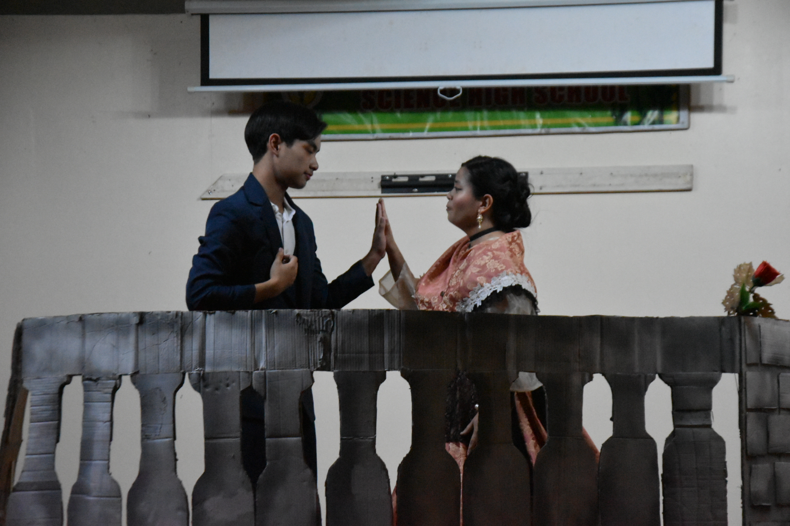
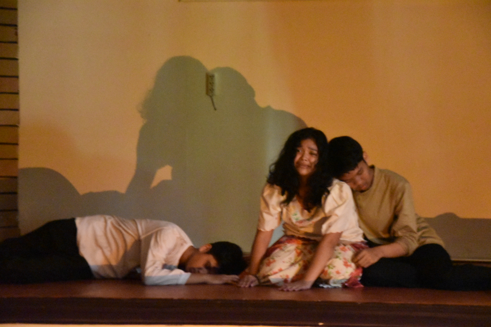
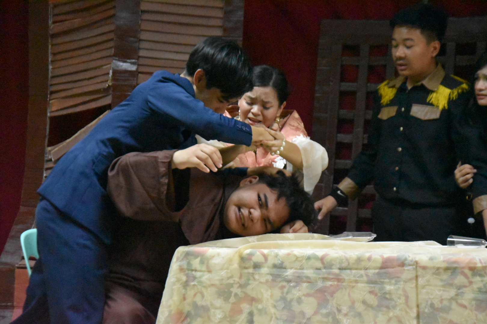
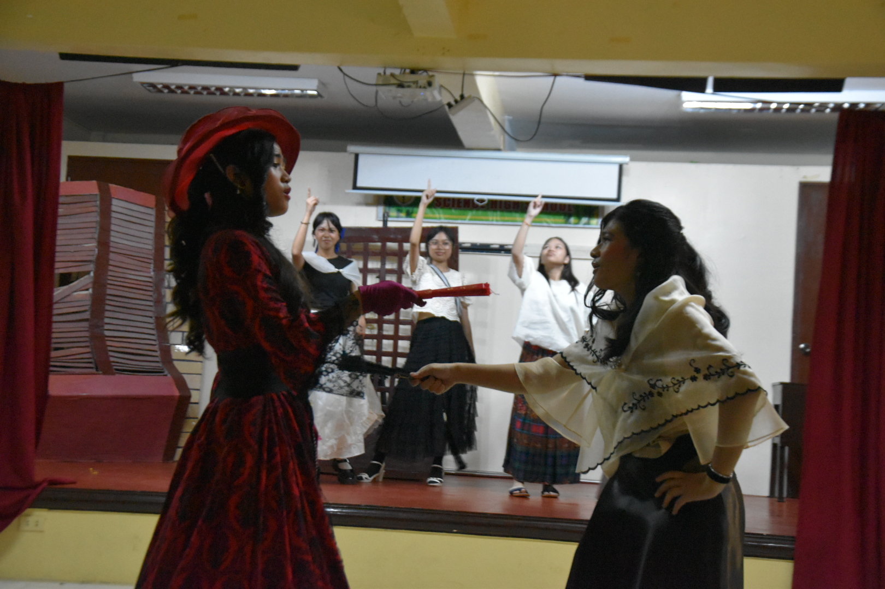
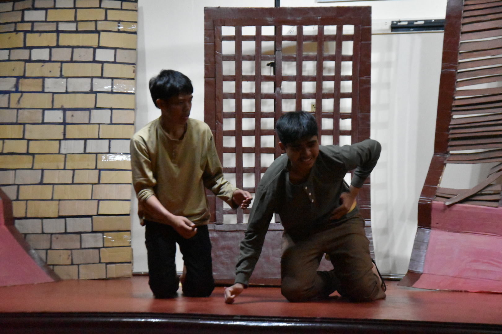
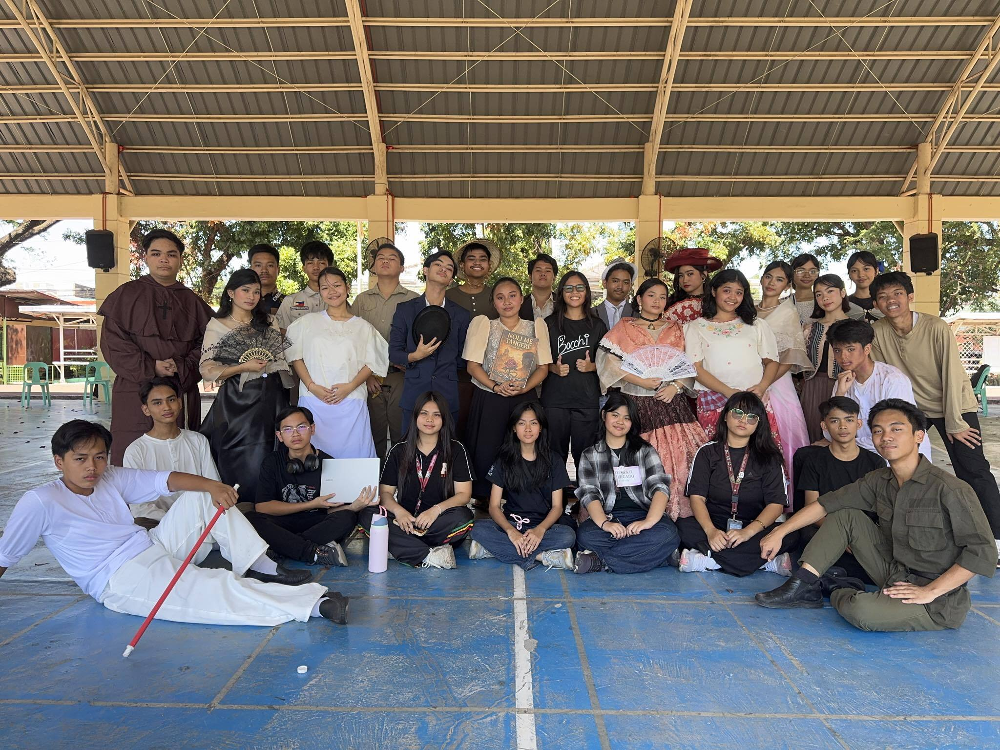

Photo credits: Jade Imperial & Video credits: Sefie Labador <3





Our class performed selected scenes from Noli Me Tangere, the famous novel written by José Rizal. The play allowed us to bring the story to life by portraying its characters and important moments. Through acting, costumes, and dialogue, we were able to show the themes of injustice, courage, and social awareness that the novel represents.

Preparing for the play was a memorable experience for our class. We worked together to rehearse our scenes, prepare costumes, and make sure every part of the performance went smoothly. The process strengthened our teamwork and cooperation, and it allowed us to appreciate the story of Noli Me Tangere in a deeper and more meaningful way.